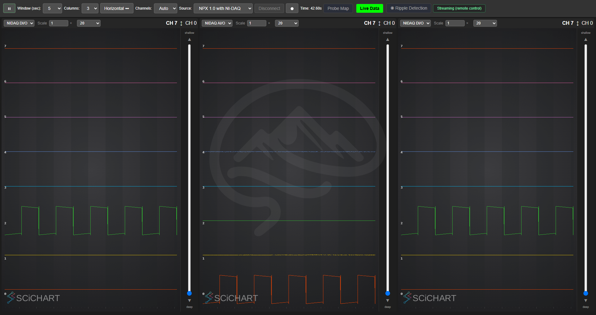

NI-DAQ — streaming, configs, and the probe codependence#
How the National Instruments DAQ (the lab's PXI-6133, in PXI1Slot2) is streamed, how its configs relate to the probe, and the failure modes you will actually hit (a stuck reservation, the probe hang). Written after the 2026-07 closed-loop bring-up, where the Pi stimulator's pulse is captured on NI-DAQ ai4.
The device at a glance#
| Property | Value |
|---|---|
| Device / slot | PXI1Slot2 (PXI-6133, 8 simultaneous-sampling AI) |
| Terminal config | DIFFERENTIAL only — RSE fails with -200077. AnalogInputChannel picks supportedModes[0] (= DIFF on the 6133), so the app already does the right thing. |
| Range | ±10 V |
| Registry source | source.nidaq → produces data.nidaq.raw |
| Display sink | proc.nidaq.display → renders the NIDAQ tab in the Live Data view |
| Record sink | proc.nidaq.recorder (interp.nidaq.raw, 8 ch) |
| Visible without a probe? | Yes — the device enumerates via DAQmxGetSysDevNames independent of any probe. |
Configs#
Config (name:) |
Probe | NI-DAQ | Use it for |
|---|---|---|---|
NI-DAQ only (real) (NiDaqOnly.yaml) |
none | real | The probe-independent path — proves the NI-DAQ streams stand-alone (no probe needed). |
Simulated NPX 1.0 + Real NI-DAQ + Ripples (SimNpx1NiDaqRipples.yaml) |
sim NP1 | real | Closed-loop demo: sim ripple → detector → Pi pulse → captured on NI-DAQ ai4. |
Simulated NPX 2.0 Multishank + Real NI-DAQ + Ripples (SimNpx2RealNiDaqRipples.yaml) |
sim NP2 | real | Same, on the 2.0 geometry (derived data.lfp → detector). |
The sim "probe" always initializes (no hardware), so for these sim+NI-DAQ configs deviceReady
depends only on the NI-DAQ being free.
The probe codependence (why the NI-DAQ can look "dead" without a probe)#
The GUI's real-NI-DAQ profiles historically bundle a real probe (source.npx.pxi). Two
things couple them:
- Config bundling. A profile lists both
source.npx.pxiandsource.nidaq.deviceReady(MainController::handleConnectRequest) issetupSources() && setupProcessors()— every source must come up. If the probe source is present but no probe is attached, that source drags the whole connect down even though the NI-DAQ is fine. - The real probe hangs with no hardware. The IMEC
np_*open/detect blocks ininitDataSourcewhen nothing answers, so the connect thread never returns —deviceReadynever resolves (not even toFalse). No amount ofdeviceReadylogic downstream helps, because control never gets back there.
How to run the NI-DAQ without a probe: use a profile whose only real source is the NI-DAQ —
NiDaqOnly.yaml — or a sim-probe + real-NI-DAQ profile (SimNpx1NiDaqRipples,
SimNpx2RealNiDaqRipples). The sim probe inits instantly, so deviceReady reduces to "is the NI-DAQ
free?". All three are verified to reach deviceReady True with a probe absent and the NI-DAQ
present.
Making a real-probe profile fail-fast (so it degrades to NI-DAQ-only when the probe is missing) requires a timeout around the IMEC open — that is a deeper, hardware-only change and is not done here. Until then, "NI-DAQ without a probe" = pick a probe-independent profile.
The "intermittent setupSources failure" — it's a stuck reservation, not a bad config#
Symptom: SimNpx2RealNiDaqRipples (or any real-NI-DAQ profile) sometimes fails at
setupSources, and retrying keeps failing.
Root cause: the PXI-6133 is a single-reservation device. If a previous connect failed after
the NI-DAQ reserved its DAQmx task — or the backend was force-killed mid-stream — the board stays
reserved. The next worker->initialize() then fails (-50103, "resource reserved"), so
setupSources returns false. It looks like the config is broken; it is not. From a clean state
the exact same config connects cleanly (verified: deviceReady True, "Found simulated Neuropixels
2.0 Multishank Probe"). The GUI surfaces it as "An NI-DAQ device was found but could not be
configured … or it is in use."
Recover manually by releasing the reservation (reconnect after a clean disconnect, or reset the device in NI MAX). Better: the robustness fixes below make a failed connect release the board automatically, so a retry just works.
Robustness fixes (2026-07-14)#
Two changes so a failed/aborted connect never leaves the NI-DAQ wedged:
NIDAQSource::initDataSourcereleases on failure (src/modules/nidaq/NiDaqInterface.cpp). When anyworker->initialize()fails, it now callsclose()(→DAQmxStopTask+DAQmxClearTask) on every worker and marks themeClosedbefore returningfalse.close()is idempotent (null-guards, resets handles), so it is safe on the worker that just failed mid-configure. This frees the single reservation the 6133 would otherwise keep.MainControllertears down on any failed connect (src/core/MainController.cpp). A newteardownManagers()helper (cleanup sources → clear the four registries → delete the source/processor managers, all null-safe) is now called whensetupSourcesORsetupProcessorsfails, not only on an explicit disconnect. So a probe/NI-DAQ that opened before a later source failed is released, and the managers/registries are reset to a cleaneNoSource.handleDisconnectRequestreuses the same helper.
Verified (real NI-DAQ, sim NP2 probe): from clean → deviceReady True; two connect/disconnect
cycles leave the board externally reservable (no leak); with the board deliberately held busy, the
connect returns deviceReady False immediately (no hang) and, once released, the next connect
recovers to deviceReady True.
Gotchas#
- DIFFERENTIAL only. Do not switch the 6133 to RSE (-200077). The channel picks DIFF from
supportedModes[0]; leave it. - Force-kill leaks the reservation. Prefer a graceful disconnect/quit. If you must force-kill a sim backend, expect to reset the device (or just rely on the release-on-failed-connect above).
ai4is the stim capture line in the closed-loop demo (Pi GPIO17 → AM 2300 gate). See../SpikesPeak_Status.md§21–§22 (wasStimClosedLoop_Status.md, now inarchive/).
Streaming options: "NIDAQ AI/O" and "NIDAQ DI/O"#
The live-view stream selector labels are mapped centrally in webinterface/ChartColumn.js
(static streamLabel(streamId)):
| streamId | Label | Source |
|---|---|---|
nidaq |
NIDAQ AI/O | data.nidaq.raw (the 8 analog inputs) — done + verified |
nidaq_di |
NIDAQ DI/O | data.nidaq.di (port0 lines as 0/1 channels) — done + verified |
ap / lfp |
AP Band / LFP Band | probe bands (unchanged) |
"Separate tabs" = two live-view columns (top toolbar Columns:), one set to NIDAQ AI/O and one
to NIDAQ DI/O — no new tab widget is needed once the DI stream exists.
Digital I/O stream — what is already there#
The digital lines are already acquired. In NIDAQDevice::acquireData (NiDaqInterface.cpp), each
active digital port is read with DAQmxReadDigitalU8/U32, bit-shifted by port index into a single
status word, and stored per sample in the AI packet aux as NiDaqPacketInfo.digitalBitmask
(time-aligned with the analog samples via the shared AI sample clock). It is captured but not yet
exposed as its own displayable stream.
Digital I/O stream — implemented (2026-07-14)#
The DI is now surfaced as its own data.nidaq.di stream, so it renders as NIDAQ DI/O in a second
live-view column. What was added:
data.nidaq.diregistry type (Utils.cpp):registerData<NiDaqData>("data.nidaq.di")+interp.nidaq.di(sameNiDaqDatatype as the analog stream).- A parallel buffer + producer (
NIDAQSource::scanForDataSource): a secondCircularBuffer<double, NiDaqPacketInfo>bound todata.nidaq.di, handed to theNIDAQDevice(its constructor now takesdiProducerID+diData). Its channel count is set to the real line count ingetDITaskInfo(mDiData.setCapacity(kNIDaqMaxBufferSamples, mNumDIChannels)), mirroring the AI buffer, so the display infers 8 channels viasampleDimensions(). - The acquire-loop write (
NIDAQDevice::acquireData): right after the existing digital read, each line is written as one channel ((digitalData[i] >> j) & 1-> 0.0/1.0) into the DI buffer, aux timestamp aligned to the AI sample index, thencommitWrite. Same clock, same write index as AI. - Config:
source.nidaqgains adioutput andproc.nidaq.displayanidaq_diinput (scale: 5.0, so a 0->1 line spans ~5/6 of a row). Added toSimNpx1NiDaqRipples.yaml+NiDaqOnly.yaml. - Frontend: no change needed beyond
ChartColumn.streamLabel(already mapsnidaq_di-> "NIDAQ DI/O"). "Separate tabs" = two live-view columns, one AI/O + one DI/O.
Verified (real PXI-6133): the nidaq_di WebSocket frame carries 8 channels, min=max=5.0 for all
8 lines (= line value 1.0 x scale 5.0), matching a direct hardware read (port0/line0:7 = all HIGH).
On this rig the 8 lines are currently static HIGH (confirmed at 40 kHz clocked, and the Pi stim
fire does not toggle any of them -- the stim gate is on the analog line ai4), so the DI traces are
flat-high; when a wired source drives a line, the 40 kHz-clocked DI stream shows it live.
Real-probe sync pulse (2026-07-14): with the real NP1.0 probe running (Npx1PxiNiDaq.yaml, which now also carries the di output + nidaq_di display input), the probe's sync output appears on port0/line2 and shows as a clean ~1 Hz square wave in the NIDAQ DI/O column (the other 7 lines stay high). This is the definitive dynamic verification of the DI stream.

Recording both bands + a teardown caveat (2026-07-14)#
Recording works for both NI-DAQ streams: proc.nidaq.recorder writes data.nidaq.raw (band
nidaq, analog volts) and data.nidaq.di (band nidaq_di, digital 0/1 lines) — both are
[float64 ts][float64 x N] and load via spikespeak_postprocess. Verified: analog ai1 (3.6 Vpp) and
digital line1 (0/1) both carry the ~75 Hz square wave; the NP1.0 sync rides digital line2.
Teardown bug fixed: slIpStopProcessor in RecordProcessor, DisplayProcessor (neuropixels) and
AudioProcessor was not idempotent (mTimer->deleteLater() with no guard). A disconnect after a
record stops the processors twice (pause + teardown) -> double-delete of the dangling mTimer ->
crash. Fixed by guarding (if (!mTimer) return; ... mTimer = nullptr;), matching
NiDaqDisplayProcessor. Also: NIDAQSource::closeDataSource and a new
ProcessorManager::cleanupProcessors() now join their worker threads before the buffers/tasks are
freed (MainController::teardownManagers), and handleDisconnectRequest pauses a live stream first.
Repeated disconnect/reconnect is robust — verified 10/10 record->stop->disconnect->reconnect cycles
(with a UI client connected). The earlier "repeated-swap crash" was TWO separate things: (1) the
now-fixed double-stop above, and (2) the auto-quit — WebSocketServer shuts the server down ~2 s
after the last WebSocket client disconnects (closing the browser exits the server, by design). A
CLI-only session therefore exits between cycles; keep a browser/client connected to swap sources
repeatedly. The worker leak agy flagged is now fixed: NIDAQSource::closeDataSource qDeleteAlls the
parent-less NIDAQDevice workers after the threads join (they were leaking ~100 KB/connect). Validated
over 50 disconnect/reconnect cycles — all survived, memory plateaued (~62 MB). Recorded data is
always flushed to disk before any teardown, so recordings are never lost.